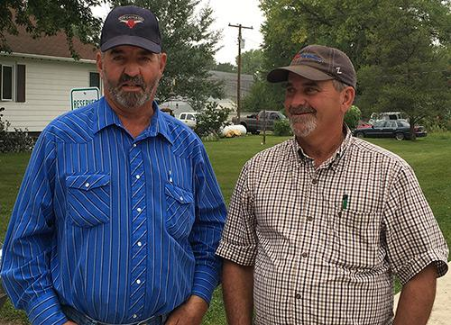
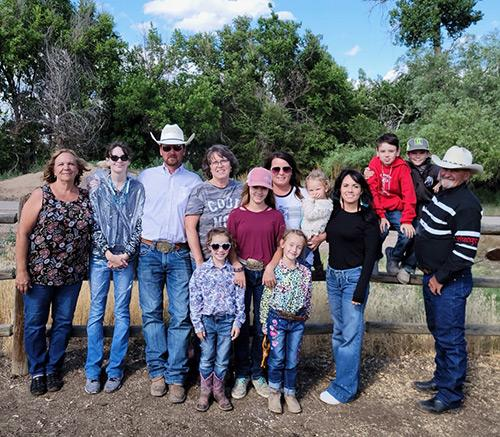

Background
Keith Alan Barthel was raised on a cattle-ranch in the SandHills of Nebraska. He learned the values of hard work, importance of agriculture, predator control and the preservation of the land. As he continued on the path of agriculture he worked at feedlots and ranches where his wisdom and knowledge on raising cattle grew. He learned the importance of vaccines to prevent illnesses and the different antibiotics to treat illnesses for their different diseases.
Alan met his wife (Jan Snider) at Western Bible College where they got married in 1979. They decided that those important values needed to be continued. They decided that they wanted to grow their own angus cattle herd and share those values with others. They operate their ranch knowing they must share and instill the importance of a good work ethic, raising cattle and horses with their children, Brittany and Austin.
Commitment
The Barthel family operate their angus cattle herd between Colorado and Nebraska ranches. They use a combination of registered Quarter Horses to manage these cattle. They implement Beef Quality Assurance practices in order to raise the cattle in a low stress environment. By using these practices they are able to produce a valuable product that feeds families all over Colorado and Nebraska.
Faith
Being a Christ centered family, they have learned how important it is to share their faith with others. They believe that the Bible is the Word of God. They believe that Jesus was God in the flesh, lived a sinless life, was crucified for the atonement of sins, and was resurrected from the dead and lives today. With this belief, they choose to be witnesses in their community reflecting the truth of what Jesus did for them.